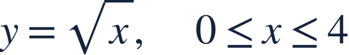
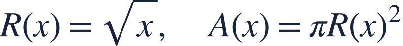
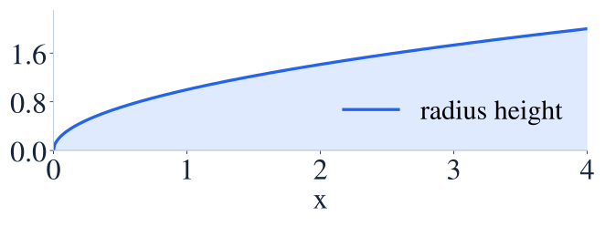
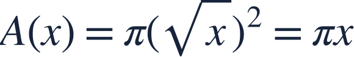
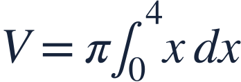
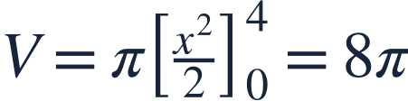
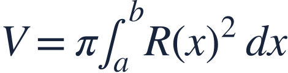

The disk method
원판법

Rotating a region touching its axis produces disks whose radius is a distance.
축에 닿는 영역을 회전하면 축까지의 거리를 반지름으로 하는 원판이 생깁니다.

Rotating a region touching its axis produces disks whose radius is a distance.
축에 닿는 영역을 회전하면 축까지의 거리를 반지름으로 하는 원판이 생깁니다.

Rotate the region between the curve and the x-axis about the x-axis.
곡선과 x축 사이 영역을 x축 둘레로 회전합니다.

A vertical slice rotates into a filled disk because the region reaches the axis.
영역이 축까지 이어지므로 세로 단면을 회전하면 속이 찬 원판이 됩니다.

Square the radius before integrating.
적분 전에 반지름을 제곱합니다.

The slice thickness is dx, perpendicular to the rotation axis.
회전축에 수직인 단면의 두께는 dx입니다.

The answer is a volume in cubic units.
답은 부피이므로 세제곱 단위입니다.

The radius is measured from the stated axis; changing the axis changes the radius formula.
반지름은 지정된 축에서 잽니다. 축이 바뀌면 반지름 식도 바뀝니다.
Rotate the region under y=x about the x-axis. Find its volume.
y=x 아래 영역을 x축 둘레로 회전한 부피를 구하세요.